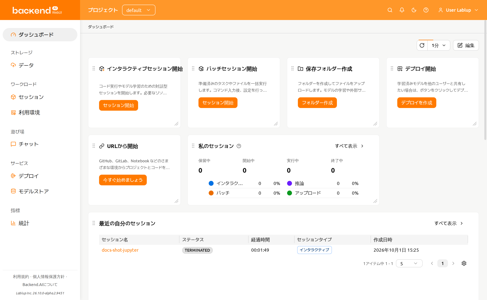
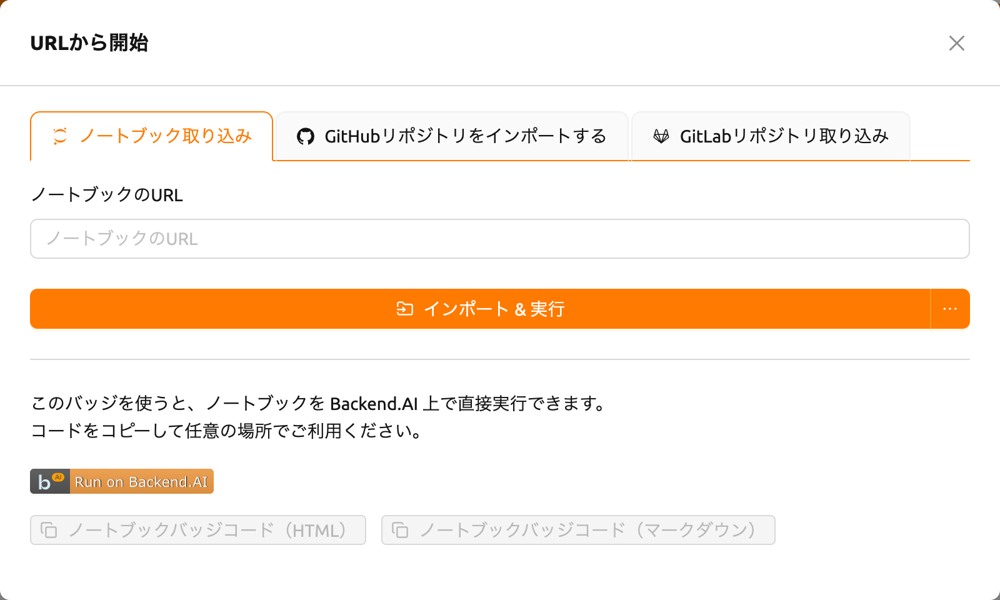
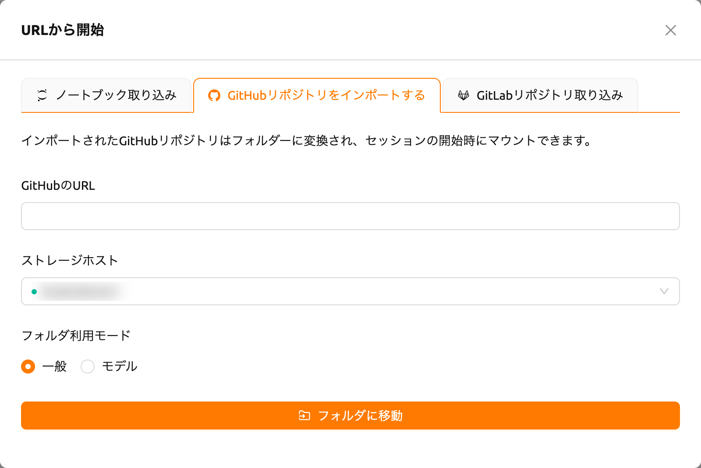
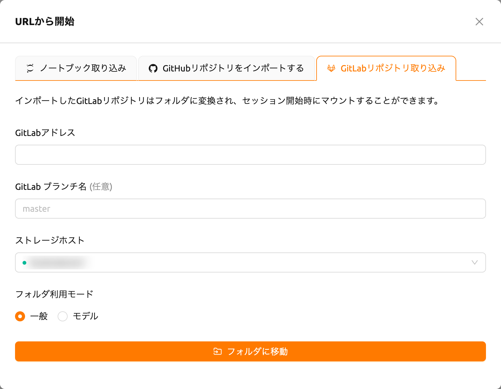
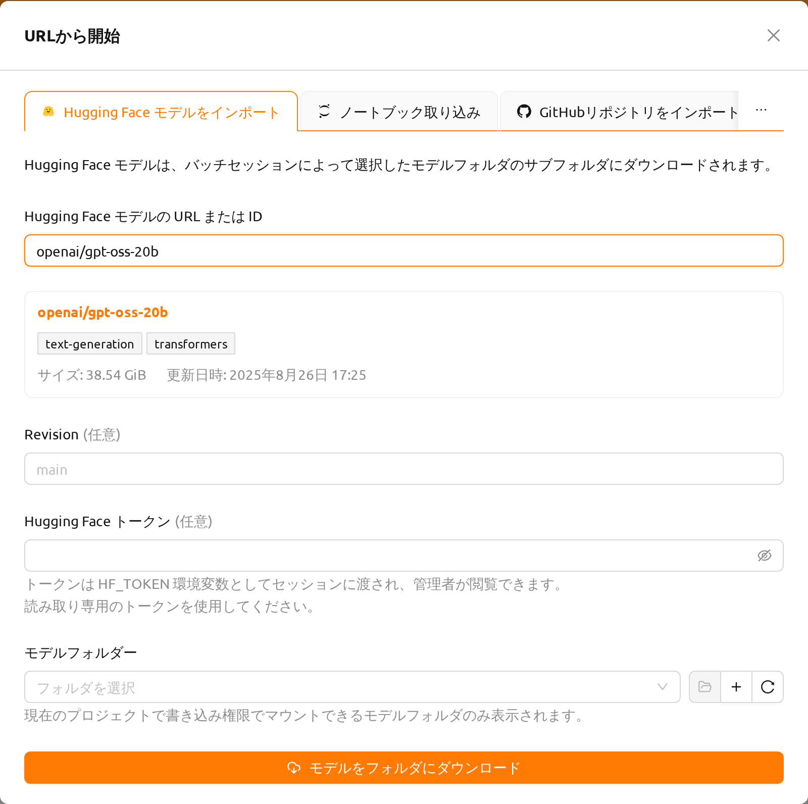
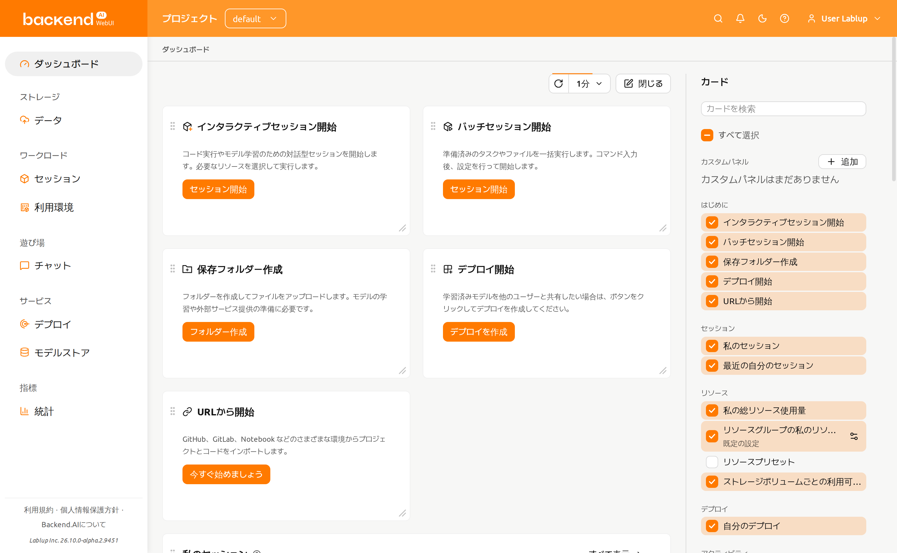
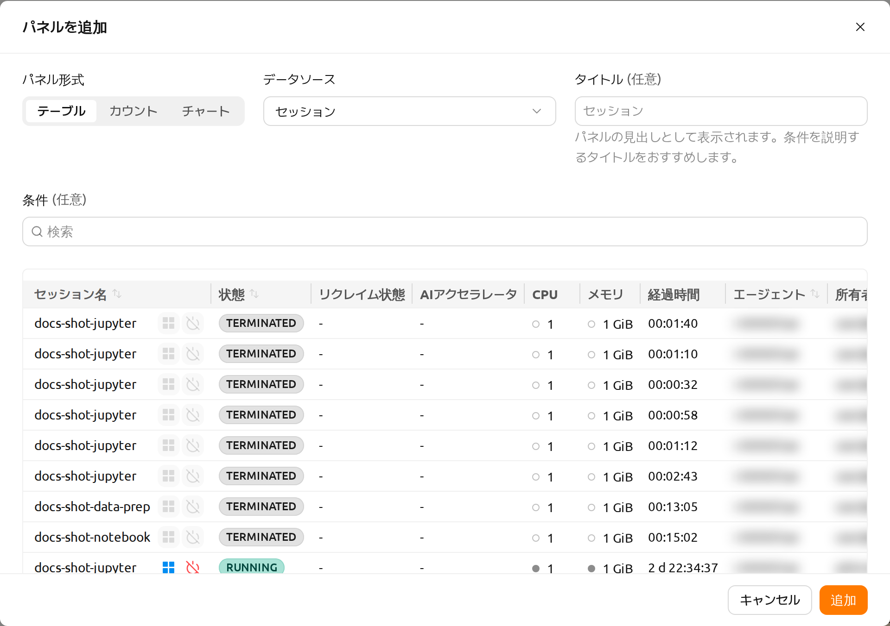

ダッシュボード#
ダッシュボードは、ログイン後に最初に表示されるページで、複数のカードで構成されています。上部のカードは、最初によく行う操作にすぐ移動できるショートカットです。各カードには操作名と一文の説明、その操作を開始するボタンがあります。
インタラクティブセッション開始: セッション開始をクリックするとセッションランチャーが開きます。環境とリソースを選び、コードを対話的に実行できます。
バッチセッション開始: セッション開始をクリックすると、セッションタイプがバッチに設定されたセッションランチャーが開きます。入力したコマンドを最後まで自動で実行するセッションを作成するときに使います。
保存フォルダー作成: フォルダー作成をクリックすると、セッションで使うファイルやデータを保存するストレージフォルダーを作成できます。
デプロイ開始: デプロイを作成をクリックすると、学習済みモデルを他のユーザーが利用できるよう提供するデプロイを作成できます。このカードは、管理者がモデルサービングを有効にしている場合にのみ表示されます。
URLから開始: 今すぐ始めましょうをクリックし、Jupyter ノートブック、GitHub または GitLab リポジトリ、Hugging Face モデルの URL を入力すると、その内容でセッションを開始できます。インポート元ごとの使い方はURLから開始を参照してください。

その下のカードは、現在のプロジェクトのセッション、リソース使用状況、最近のアクティビティを表示します：
私のセッション: 現在のプロジェクトのセッションをステータス別に表示し、実行中のセッションはインタラクティブ、バッチ、推論、アップロードなどのタイプ別に表示します。
最近の自分のセッション: 最近作成したセッションを新しい順に一覧表示します。
私の総リソース使用量: すべてのリソースグループとプロジェクトで自分のセッションが使用しているリソースを表示します。ドメイン、プロジェクト、キーペアなど複数の制限が同時に適用される場合は、最も厳しい制限が適用されます。
リソースグループの私のリソース: カードに設定されたリソースグループにおけるリソース使用量と空き容量を表示します。
リソースグループの総リソース: カードに設定されたリソースグループ全体の使用量と空き容量を要約表示します。グループに属するすべてのエージェントのデータを集計した値です。
エージェントの統計: システム内のすべてのエージェントの総リソースを表示します。
ストレージボリュームごとの利用可能量: 各ストレージボリュームで利用可能な容量を表示します。利用可能量の設定に対応したストレージホストがない場合は、代わりに案内メッセージが表示されます。
自分のデプロイ: 自分のモデルデプロイをレプリカの状態とともに一覧表示します。
自分のアクティビティ: カードに設定された期間に記録された自分の監査ログを一覧表示します。
リソースグループの総リソースとエージェントの統計のカードは、システム構成によって表示されない場合があります。
プロジェクト管理者とスーパー管理者には、管理者メニューに専用のダッシュボードがあり、プロジェクトまたはクラスター全体を対象とするカードが表示されます。
URLから開始#
ダッシュボードのURLから開始カードを使用すると、外部ソースからプロジェクトを インポートして直接実行できます。カードの今すぐ始めましょうをクリックすると、インポート元ごとに ノートブック取り込み、GitHubリポジトリをインポートする、 GitLabリポジトリ取り込みのタブを持つダイアログが開きます。実験的機能である Hugging Faceインポートを有効にすると、Hugging Face モデルをインポートタブが 追加で表示されます。
ノートブック取り込み#

ノートブックのURLフィールドにJupyter Notebook URL（
.ipynbで終わる）を 入力しますインポート & 実行をクリックすると、自動的にセッションが作成され、Jupyterで ノートブックが開きます
ボタンの横にあるドロップダウン矢印をクリックしてオプション付きで開始を 選択すると、起動前にセッション環境をカスタマイズできます。
ノートブックはコンピュートセッション内部でダウンロードされる（ブートストラップ
スクリプトがcurl -O <url>を実行する）ため、入力するURLはセッションから到達可能で
ある必要があります。localhostや127.0.0.1などのローカルアドレスは、お使いのマシン
ではなくセッションコンテナ自体を指すため利用できません。コンピュートセッションから
到達可能なURLを入力してください。
ブラウザのポップアップブロッカーをオフにすると、実行中のノートブックウィンドウが 自動的に開きます。セッションを開始するためのリソースが不足している場合、インポート されたノートブックは実行されません。
タブの下部では、「Run on Backend.AI」バッジコードを生成できます。HTMLまたは Markdownのバッジコードをコピーして、プロジェクトのドキュメントに直接実行リンクを 埋め込むことができます。
バッジコードを生成する前にログインしている必要があります。ログインしていない場合 は、まずログインしてから再度お試しください。
GitHubリポジトリをインポートする#

- GitHubのURLフィールドに有効なGitHubリポジトリURLを入力します
- リポジトリを保存するストレージホストを選択します
- 必要に応じてフォルダ利用モード（一般またはモデル）を設定します
- フォルダに移動をクリックしてリポジトリを新しいストレージフォルダにクローン します
インポートされたリポジトリはストレージフォルダに変換され、セッション開始時に マウントできます。
GitLabリポジトリ取り込み#

- GitLabアドレスフィールドに有効なGitLabリポジトリURLを入力します
- 必要に応じてGitLab ブランチ名を指定します（デフォルト:
master） - リポジトリを保存するストレージホストを選択します
- 必要に応じてフォルダ利用モード（一般またはモデル）を設定します
- フォルダに移動をクリックしてリポジトリを新しいストレージフォルダにクローン します
Hugging Face モデルをインポート#
Hugging Face モデルをインポートタブでは、Hugging Faceのモデルをモデル フォルダーにダウンロードできます。ダウンロードしたモデルは、あとでコンピュート セッションにマウントしたり、デプロイとして公開したりできます。
このタブは、ユーザー設定ページの実験的特徴セクションで Hugging Face からインポートを有効にするまで表示されません。実験的機能は 将来のアップデートで変更または削除される可能性があります。

Hugging Face モデルの URL または IDフィールドにモデルを入力します。
https://huggingface.co/openai/gpt-oss-20bのようなモデルページのURLと、openai/gpt-oss-20bのようなモデルIDのどちらも使用できます。データセットや スペースなど、モデル以外のページのアドレスは受け付けられませんフィールドに有効なモデルを入力すると、しばらくしてダイアログが Hugging Face でモデルを照会し（確認中はローディング表示が出ます）、インポートを開始する 前にフィールドの下にプレビューカードを表示します。カードには、Hugging Face のモデルページへのリンクになったモデルID、モデルのタスクおよびライブラリの タグ、サイズ、更新日時が表示されます
必要に応じてRevisionにダウンロードするモデルリポジトリのブランチ、タグ、 またはコミットを入力します。空欄のままにするとデフォルトのリビジョンが ダウンロードされます。入力したアドレスにリビジョンが含まれている場合は、その リビジョンが使用されます
必要に応じてHugging Face トークンを入力します。アクセスが制限された モデルや非公開モデルにはトークンが必要です
ダウンロード先のモデルフォルダーを選択します。フィールドの下の説明の とおり、現在のプロジェクトで書き込み権限でマウントできるモデルフォルダーのみ 表示されます。ダウンロードセッションがフォルダーに書き込むため、読み取り専用 でしかマウントできないフォルダーは除外されます。セレクターの横のボタンで、 選択したフォルダーを開く、新しいモデルフォルダーを作成する、一覧を更新する 操作ができます。
モデルをフォルダにダウンロードをクリックします
ダイアログが閉じ、ダウンロードを実行するバッチセッションが開始されます。 ダウンロードはそのセッション内部で実行されるため、進行状況はセッションページで 確認できます。セッションが正常に終了するとモデルを利用できます。セッションが 失敗した場合、ダウンロードは完了しておらずモデルは利用できません。
モデルは、選択したフォルダー内にモデル名で作成されたサブフォルダーに保存
されます。たとえばopenai/gpt-oss-20bはgpt-oss-20b/にダウンロードされます。
そのため、1つのモデルフォルダーに複数のモデルを保管できます。
トークンはダウンロードセッションにHF_TOKEN環境変数として渡され、管理者が閲覧
できます。読み取り専用のトークンを使用してください。
このタブはモデルフォルダーにダウンロードするため、デプロイ機能が有効な アカウントでのみ利用できます。サイズの大きいモデルはダウンロードに時間がかかり、 対象フォルダーのストレージ容量を消費します。
ダッシュボードレイアウトのカスタマイズ#
ボードは特別なモードに切り替えなくても、いつでも並べ替えられます：
- カードの移動: カードのヘッダーをドラッグして、ボード上の位置を変更できます。
- カードのサイズ変更: カードの右下隅をドラッグしてサイズを調整できます。各カードにはコンテンツの可読性を確保するための最小サイズが設定されています。
編集ボタンをクリックすると編集サイドバーが開き、閉じるをクリックすると再び非表示になります。サイドバーにはそのページで提供されるすべてのカードがテーマ別に一覧表示されます。カードを選択するとボードに追加され、選択を解除するとボードから削除されます。

配置はサーバー上の自分のアカウントに保存されるため、ログインするどのブラウザーでも同じ配置が使われます。配置をデフォルトに戻すには、編集サイドバー下部のレイアウトを初期化ボタンをクリックして確認します。レイアウトを初期化してもカスタムパネルは削除されません。
WebUIの更新で新しいダッシュボードカードが追加された場合、保存済みの配置が あっても、新しいカードは自動的にダッシュボードに表示されます。
カードの既定の設定#
リソースグループや期間を使用するカードには、既定値を保存しておけます。編集サイドバーでそのカードのカードの既定の設定を開き、ボードを開いたときに適用する値を指定します。カードのヘッダーの選択メニューで変更した値は、表示中の間だけ適用されます。
カスタムパネル#
編集サイドバーにはカスタムパネルの一覧も表示されます。カスタムパネルは、選択したデータソースを指定した条件で絞り込んで表示します。パネルにはタイトルとデータのみが表示されるため、条件がわかるタイトルを付けることをおすすめします。
パネルを追加するには、サイドバーの追加ボタンをクリックします。パネルのダイアログには以下の項目があります。パネル形式とデータソースは必須項目で、両方を選択しないとダイアログを送信できません。
- データソース: パネルに表示するデータソースです。セッション、デプロイ、データストレージ選択から選択します。
- パネル形式: データソースの表示方法です。テーブル、カウント、チャートから選択します。セッションデータソースの場合は グリッド も選択できます。
- タイトル: パネルのタイトル（オプション）です。省略した場合はデータソース名が使用されます。
- 条件: パネルに表示する項目を絞り込むプロパティフィルターです。
入力項目の下のライブプレビューには、現在の条件に一致する行が表示されます。プレビューで列をソートすると、そのソート順がパネルに適用されます。追加ボタンをクリックすると、パネルがボードに配置されます。

デプロイパネルは、デプロイページと同じテーブル（名前、状態、レプリカ概要、モデル、作成日時）を使用して、プロジェクトのモデルデプロイを一覧表示します。デプロイの名前をクリックすると、その詳細ページが開きます。
チャートを選択すると、条件に一致する項目をチャートとして表示します。グループ比較のチャートの種類（ドーナツ、円、棒、レーダー）は、グループ化で選んだプロパティごとに項目数を数えます。作成数の推移のチャートの種類（折れ線、面、縦棒）は、選択した期間を区切った各区間で作成された項目数を数えます。テーブルも表示をオンにすると、条件に一致する行がパネルのチャートの下に表示されます。
グリッドを選択すると、セッションリソースグリッドが表示されます。条件に一致する各セッションに割り当てられたリソースを、使用率に応じて色分けされたユニットセルとして表示します。セッションをクリックすると、テーブルで行をクリックしたときと同様に詳細ドロワーが開きます。グリッドは条件に一致するセッションのうち最大100件までを表示し、それを超える場合は件数の通知が表示されます。
グリッドの表示設定（リソース／カーネルモード、表示するリソースまたはメトリック、メモリ単位、レイアウト）は、パネルの追加／編集ダイアログのライブプレビューで指定し、パネルとともに保存されます。パネル自体にはこれらの設定を変更するコントロールがないため、別の表示にしたい場合はパネルをもう一つ追加してください。
グリッドは実験的機能です。パネル形式の選択肢に表示されるのは、実験的特徴でSession resource grid view がオンになっている場合のみです。後でこの設定をオフにしても、作成済みのグリッドパネルは保存された設定を維持したまま、設定を再度オンにするまでセッションテーブルとして表示されます。
パネルのデータソース、パネル形式、条件、タイトルを後から変更するには、サイドバーの該当パネルの横、またはボード上のパネルヘッダーにある鉛筆（編集）アイコンをクリックし、変更内容を保存します。パネルを削除するには、ゴミ箱（削除）アイコンをクリックし、確認ポップアップで承認します。
セッションおよびデプロイパネルは現在のプロジェクトのデータを表示し、すべてのプロジェクトメンバーが利用できます。データストレージ選択パネルはスーパー管理者のみ利用できます。現在の権限で照会できないデータソースのパネルは、サイドバーの一覧には残りますが、ボードには表示されません。
自動更新#
ダッシュボードバーの更新コントロールで、すべてのカードの更新間隔を設定できます。オフまたは5秒から10分の間隔を選択でき、コントロールをクリックするとすべてのカードをすぐに更新します。